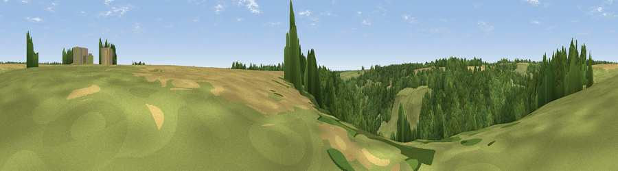

Viewpoint near Edgeworth
#41425 in England · top 83% of its area beats it · near EdgeworthWhere it is
The exact computed spot (SO 95525 07025). Click the marker for map links.
The view, rendered

A 360° render of this exact spot computed from the terrain model, tree cover and land cover — summer colours, afternoon light, calibrated against photographs of famous viewpoints. Real trees, hedges and buildings will differ in detail.
The panorama
Grey silhouette: terrain skyline in each direction (720 bearings, Earth curvature and refraction included). Dashed green: skyline with trees (+15 m) and buildings (+8 m) as obstacles. Blue strip: how far the ground is visible on each bearing.
Where the view opens
Wedge length = distance to the farthest visible ground on that bearing (vegetation-aware). Rings at 10, 25 and 50 km.
What fills the view
59% woodland · 30% grassland · 11% cropland
Angular shares of the visible panorama (visual magnitude), not map area. Landscape diversity 0.40 (0–1 Shannon).
Key numbers
More beautiful places nearby
The staircase of upgrades: each row has a higher view potential than everything closer. Driving times are estimates from straight-line distance, calibrated against real road routing — check an actual route before setting out.
| Place | Direction | Drive | Score |
|---|---|---|---|
| Viewpoint near Miserden | NNW · 2 km | ~4 min | 40.0 |
| Sapperton Hill | S · 4 km | ~9 min | 45.2 |
| Viewpoint near Whiteway | WNW · 4 km | ~10 min | 50.0 |
| Pen Hill | NE · 7 km | ~14 min | 66.4 |
| Birdlip Hill | NNW · 8 km | ~16 min | 71.7 |
| Viewpoint near Witcombe | NNW · 9 km | ~19 min | 72.2 |
| Viewpoint near Great Witcombe | NW · 10 km | ~19 min | 80.5 |
| Nottingham Hill | N · 21 km | ~36 min | 80.9 |
51.76189, -2.06624 · source: screening · position refined by local search. Computed location — check access rights before visiting.